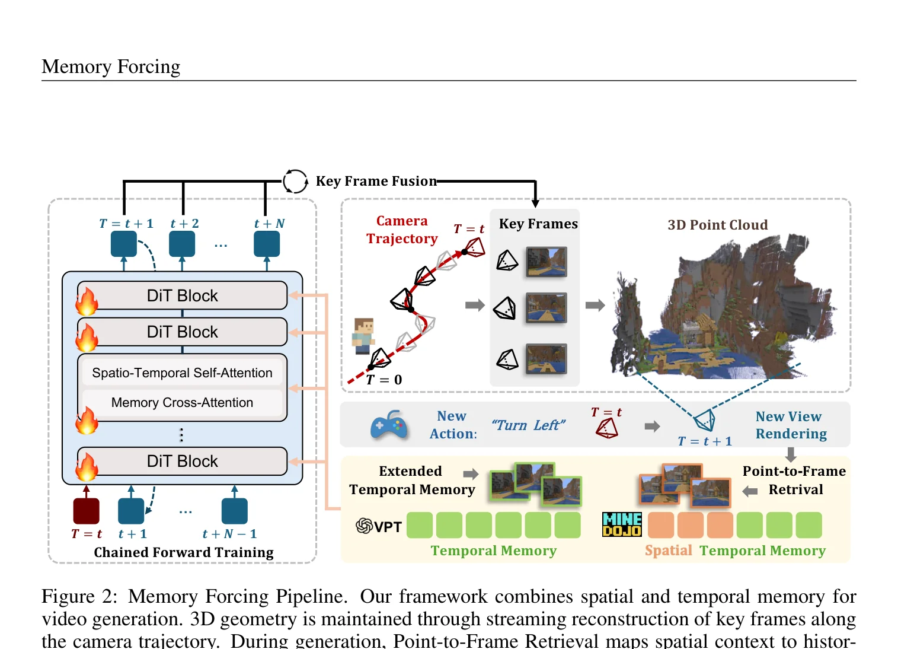
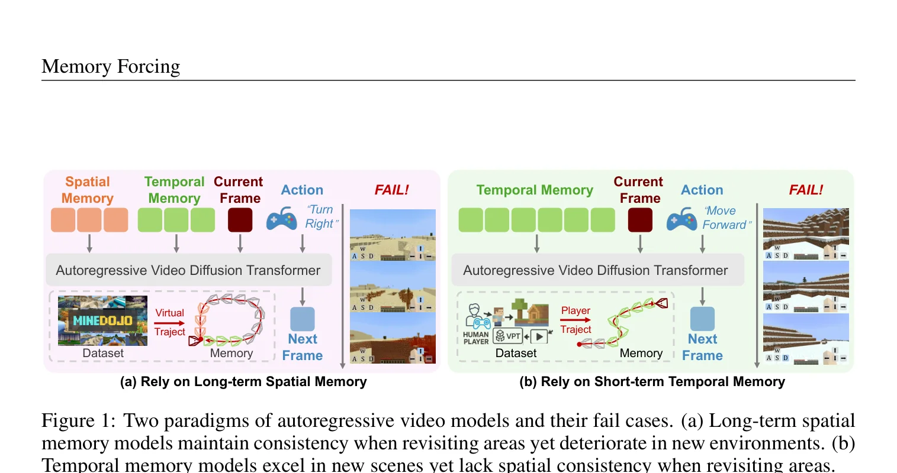
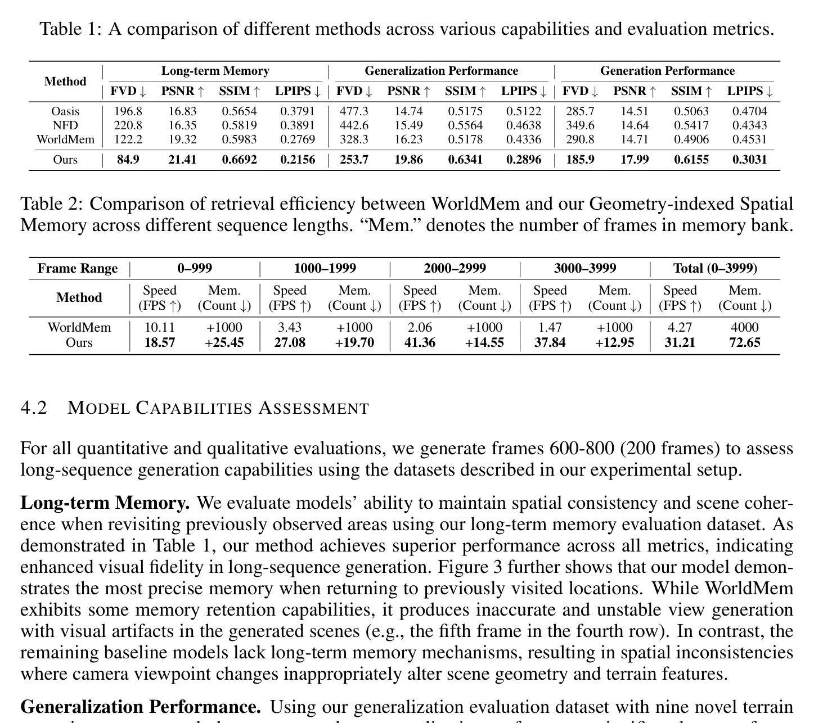
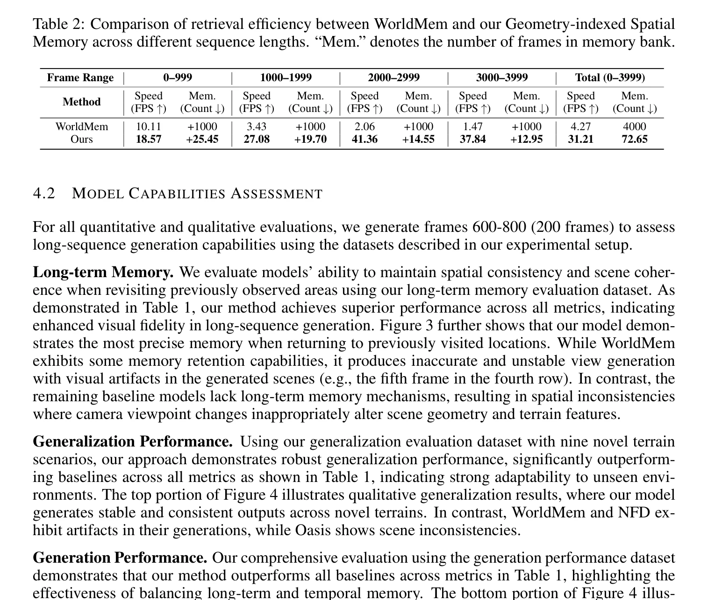
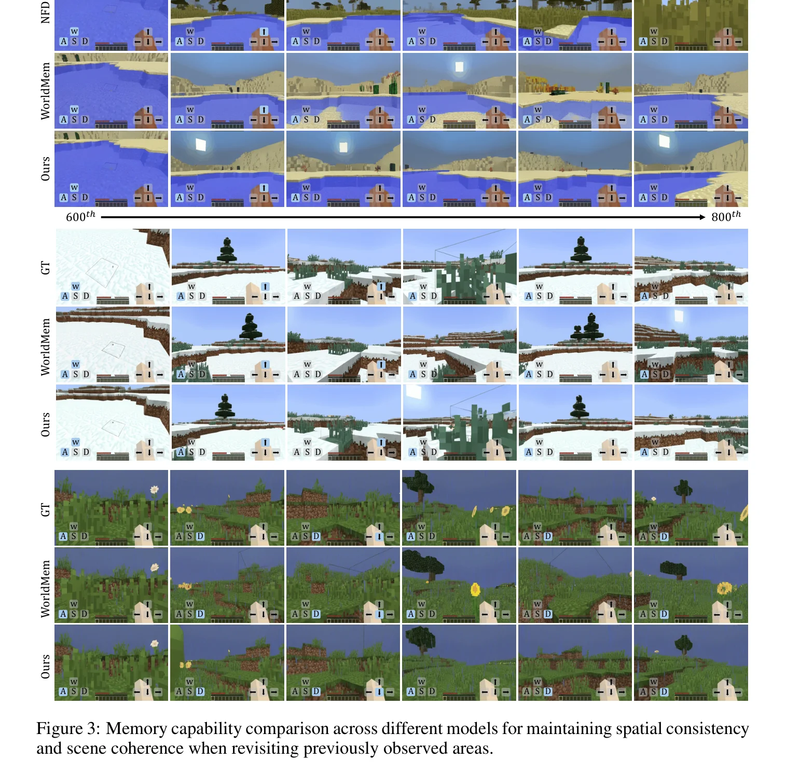
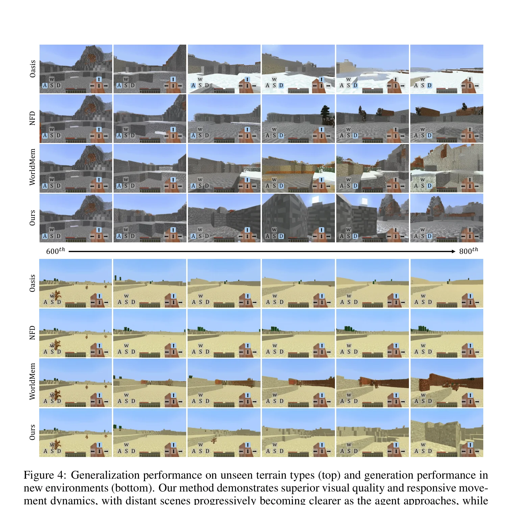
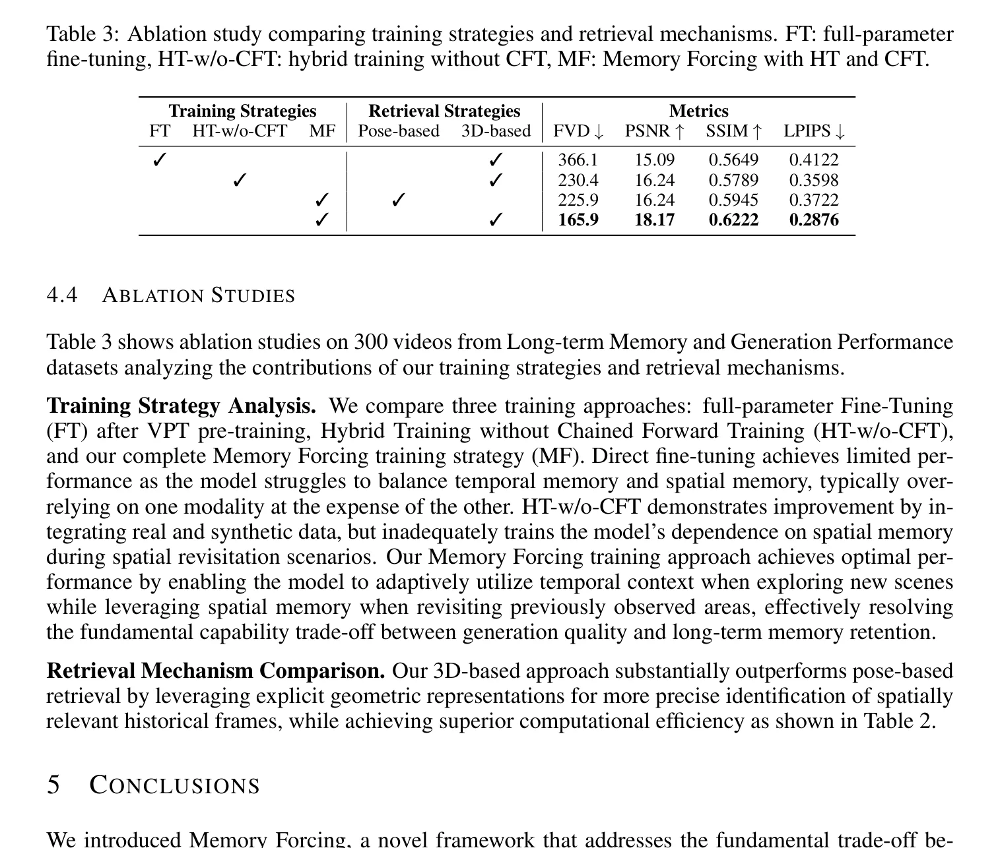
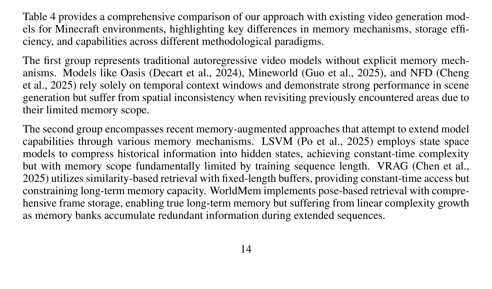

时空记忆的两难：探索 vs 重访
自回归视频扩散模型（AR Video Diffusion Models）已成为世界模型和交互式场景生成的强大工具，其中Minecraft游戏世界是最具代表性的应用场景。在自回归范式下，模型必须在一个有限的上下文窗口内压缩和利用历史信息（即"记忆"），这就引出了一个根本性的权衡问题：如何分配时序记忆与空间记忆的比重？
现有方法在这一权衡上存在两种特征性失败模式，论文通过Figure 1清晰展示了这一点：
纯时序记忆的失败
仅依赖短期时序上下文的模型在探索新场景时表现优秀，但在重访已探索区域时空间一致性严重退化——相机视角变化会不当改变场景几何和地形特征
纯空间记忆的失败
依赖长期空间记忆的模型在重访时能保持一致性，但在探索新场景时生成质量显著下降——过度依赖不充分的空间上下文，导致生成内容退化

SVG 可视化：时序记忆（左）依赖短期帧序列，探索好但重访差；空间记忆（右）依赖3D点云，重访好但探索差
Teacher Forcing 的隐性缺陷
现有方法普遍采用Teacher Forcing策略进行训练——每个帧的去噪条件于干净的真实历史帧。然而，这种训练方式低估了推理时的漂移：模型在训练时总是看到完美的历史帧，但在推理时必须依赖自己的预测结果。这导致模型过度依赖短期时序线索，而在测试时未能充分利用检索到的长期空间记忆。
一个直觉方案是将探索数据和重访数据混合训练。但论文指出，简单的数据混合会导致模型在两种场景间"左右摇摆"，无法学到动态切换记忆策略的能力。Memory Forcing的核心洞察是：需要设计特定的训练协议，强制模型在正确的场景下依赖正确的记忆源。这不是简单的数据平衡问题，而是一个课程学习（Curriculum Learning）问题。
论文的核心设定是：在固定上下文窗口 $L$ 帧的约束下，如何让模型学会动态分配时序记忆和空间记忆。窗口构造公式为：$W = [T_{fixed}, M_{context}]$，其中 $T_{fixed}$ 是固定的近期时序帧，$M_{context}$ 则根据场景动态选择——探索时扩展为更多时序帧，重访时切换为空间记忆。
Hybrid Training + Chained Forward Training
Memory Forcing 的训练框架由两大策略组成：Hybrid Training（混合训练）通过数据分布引导模型在不同场景下使用不同记忆源；Chained Forward Training（链式前向训练，CFT）通过模型自预测替代ground truth来放大姿态漂移，进一步强化空间记忆的依赖。
2.1 Hybrid Training：双数据源的策略性分配
核心思想是在固定上下文窗口 $L$ 中，将前 $L/2$ 帧固定为近期时序上下文 $T_{fixed}$，后 $L/2$ 帧根据场景灵活分配：
其中 $M_{spatial}$ 是通过几何索引空间记忆检索到的长期空间帧，$T_{extended}$ 是来自更早时间步的额外时序帧。关键设计在于不同数据集触发不同记忆模式：
SVG 可视化：VPT数据集触发纯时序条件（探索导向），MineDojo数据集触发时空联合条件（重访导向），两者互补形成平衡最优
Hybrid Training的精妙之处在于将数据集的内在特性转化为训练课程。VPT是人类玩家录制，天然以探索为主，适合训练时序记忆；MineDojo是模拟轨迹，频繁在已访问区域来回移动，适合训练空间记忆。这种设计避免了手动标注"探索/重访"标签的需要，实现了数据驱动的自适应课程学习。
2.2 Chained Forward Training (CFT)：链式前向训练
CFT 是论文在训练策略上的核心创新。它逐步用模型自身的预测替换ground truth时序上下文，人为制造更大的姿态变化，从而强制模型依赖空间记忆来维持一致性。

Require: Video x, conditioning inputs C, forward steps T, window size W, model εθ
Initialize F_pred ← ∅, L_total ← 0
for j = 0 to T - 1 do
// 1. 构造当前窗口
Construct window W_j:
for k ∈ [j, j + W - 1] do
if k ∈ F_pred then
W_j[k - j] ← F_pred[k] {Use predicted frame}
else
W_j[k - j] ← x_k {Use ground truth frame}
end if
end for
// 2. 计算当前窗口的扩散损失
L_j ← ||ε - εθ(W_j, C_j, t)||²
L_total ← L_total + L_j
// 3. 生成下一步预测帧（无梯度）
if j < T - 1 then
x̂_{j+W-1} ← denoise(W_j, C_j) {Fewer steps, no gradients}
F_pred[j + W - 1] ← x̂_{j+W-1} {Store for next window}
end if
end for
return L_chain ← L_total / TCFT的关键机制可以概括为三步循环：
SVG 可视化：CFT的三步循环——构造混合窗口、计算损失、链式传播预测帧，逐步放大姿态漂移以强化空间记忆依赖
CFT的设计有两层深意。第一，链式预测创造更大的姿态变化：当模型用自己的预测帧替代ground truth时，预测误差会逐步累积，导致后续窗口的视角偏移更大。这迫使模型必须依赖空间记忆（而非仅仅时序记忆）来维持跨窗口的一致性。第二，减小训练-推理差距：Teacher Forcing让模型总是看到完美的历史，而CFT在训练时就让模型适应自己预测的不完美历史，从而在推理时表现更稳健。
CFT在精神上类似于NLP中的Scheduled Sampling（Bengio et al., 2015），但有本质区别：Scheduled Sampling是随机地在训练时用模型预测替换ground truth token，而CFT是按窗口顺序链式替换，且替换的是整帧而非单个token。链式结构保证了预测误差的真实累积效应，而非人为注入的噪声，这使得CFT能更自然地模拟推理时的漂移模式。
Geometry-indexed Spatial Memory
在训练策略之外，Memory Forcing 在推理架构上引入了几何索引空间记忆——一种基于显式3D场景几何的高效记忆检索机制。与之前基于外观的帧级检索不同，它通过点到帧映射实现O(1)复杂度的空间检索，且内存占用随空间覆盖度而非序列长度增长。
3.1 Point-to-Frame Retrieval：点到帧检索
核心思想是维护一个全局点云表示，其中每个3D点都链接到其来源帧。当需要检索历史记忆时，将全局点云投影到当前相机姿态，分析可见点的来源帧索引，选出最相关的Top-K历史帧：
其中 $P^t_{visible}$ 是当前相机姿态下可见的点集，$\text{source}(p_i)$ 返回点 $p_i$ 的来源帧索引，$H_t$ 包含可见点中引用频率最高的Top-8历史帧。
SVG 可视化：全局点云中每个3D点链接到来源帧（左），投影到当前视角后统计可见点的来源帧频率（右），选出Top-8最相关历史帧
3.2 Incremental 3D Reconstruction：增量式3D重建
系统采用选择性关键帧重建策略——仅当帧揭示了未观察区域或历史上下文不足时才进行3D重建：
其中 $\text{NovelCoverage}$ 评估当前帧是否贡献了足够的新空间覆盖，$\tau_{hist} = L/2$ 是最小历史帧数阈值。重建使用VGGT网络生成相对深度图，通过跨窗口尺度对齐模块保持全局一致的深度尺度。
3.3 Memory Cross-Attention：Plucker坐标增强
检索到的历史帧通过Memory Cross-Attention注入DiT骨干网络。当前帧token作为Query，历史帧token作为Key和Value，且Query和Key都通过Plucker坐标增强以编码当前与历史视角之间的相对位姿信息：
其中 $\tilde{Q}$ 和 $\tilde{K}_{spatial}$ 是经过Plucker坐标增强的查询和键。
之前的帧级检索方法（如WorldMem）基于外观相似度检索历史帧，这存在三个问题：(1) 对视角和光照变化敏感；(2) 相邻视角容易产生近重复帧，造成冗余；(3) 随序列增长，线性扫描的检索延迟不可接受。Memory Forcing的几何索引将检索锚定在3D空间结构上——同一物理位置无论从哪个视角观察，其3D点都指向相同的来源帧。这天然具有视角不变性，且通过体素降采样保证了恒定的检索复杂度。

代码实现解析
本章对Memory Forcing的关键组件进行伪代码级别的解析，帮助读者理解论文方法的实际实现细节。
4.1 混合训练的窗口构造
import torch
import numpy as np
class HybridWindowConstructor:
"""Hybrid Training: 根据场景类型动态构造上下文窗口"""
def __init__(self, window_size=16, spatial_memory_size=8):
self.L = window_size
self.spatial_k = spatial_memory_size
self.fixed_frames = window_size // 2 # L/2 固定时序帧
self.flex_frames = window_size - self.fixed_frames # L/2 灵活帧
def construct_window(self, temporal_frames, spatial_frames,
is_revisiting, extended_temporal_frames=None):
"""
Args:
temporal_frames: 近期L/2帧 [B, L/2, C, H, W]
spatial_frames: 几何检索的空间记忆帧 [B, K, C, H, W]
is_revisiting: 是否正在重访已探索区域
extended_temporal_frames: 扩展时序帧（探索时使用）
Returns:
window: [B, L, C, H, W] 上下文窗口
"""
# 固定部分：近期时序帧 T_fixed
T_fixed = temporal_frames[:, -self.fixed_frames:]
if is_revisiting:
# 重访模式：使用空间记忆 M_spatial
M_context = spatial_frames[:, :self.flex_frames]
else:
# 探索模式：使用扩展时序帧 T_extended
M_context = extended_temporal_frames[:, -self.flex_frames:]
# 拼接: W = [T_fixed, M_context]
window = torch.cat([T_fixed, M_context], dim=1)
return window4.2 Chained Forward Training 实现
class ChainedForwardTraining:
"""CFT: 链式前向训练，逐步用预测帧替换GT帧"""
def __init__(self, model, num_chains=4, window_size=16):
self.model = model
self.T = num_chains # 链式前向步数
self.W = window_size
def forward(self, video, actions, poses, spatial_memory):
"""
Args:
video: [B, T+W, C, H, W] 完整视频序列
actions: [B, T+W, action_dim] 动作序列
poses: [B, T+W, pose_dim] 位姿序列
spatial_memory: 检索到的空间记忆
"""
F_pred = {} # 存储预测帧 {frame_idx: predicted_frame}
total_loss = 0.0
for j in range(self.T):
# 1. 构造当前窗口（混合GT和预测帧）
window = self._build_window(video, F_pred, j)
# 2. 构造条件输入
C_j = {
'actions': actions[:, j:j+self.W],
'poses': poses[:, j:j+self.W],
'spatial_memory': spatial_memory,
}
# 3. 计算扩散损失（有梯度）
t = torch.randint(0, self.model.num_timesteps, (1,))
noise = torch.randn_like(window)
noisy_window = self.model.add_noise(window, noise, t)
pred_noise = self.model(noisy_window, C_j, t)
loss_j = F.mse_loss(pred_noise, noise)
total_loss += loss_j
# 4. 生成预测帧（无梯度，用于下一轮）
if j < self.T - 1:
with torch.no_grad():
pred_frame = self.model.denoise(window, C_j)
# 存储窗口末尾的预测帧
F_pred[j + self.W - 1] = pred_frame[:, -1]
return total_loss / self.T
def _build_window(self, video, F_pred, j):
"""构造混合窗口：优先使用预测帧，否则用GT"""
frames = []
for k in range(j, j + self.W):
if k < len(video) and k not in F_pred:
frames.append(video[:, k]) # GT frame
elif k in F_pred:
frames.append(F_pred[k]) # Predicted frame
else:
frames.append(video[:, k]) # Fallback to GT
return torch.stack(frames, dim=1)4.3 Point-to-Frame Retrieval 实现
class GeometryIndexedMemory:
"""几何索引空间记忆：流式3D重建 + 点到帧检索"""
def __init__(self, top_k=8, voxel_size=0.05):
self.global_points = [] # 全局点云 [(x,y,z), ...]
self.source_frames = [] # 每个点的来源帧索引
self.frame_store = {} # {frame_idx: frame_data}
self.top_k = top_k
self.voxel_size = voxel_size
def point_to_frame_retrieval(self, current_pose):
"""将全局点云投影到当前视角，检索Top-K来源帧
O(1)复杂度：仅遍历可见点，与总序列长度无关
"""
# 1. 投影全局点云到当前相机
visible_mask = self.project_to_camera(
self.global_points, current_pose
)
visible_sources = self.source_frames[visible_mask]
# 2. 统计可见点的来源帧频率
unique_frames, counts = np.unique(
visible_sources, return_counts=True
)
# 3. 选择Top-K最频繁的来源帧
top_indices = np.argsort(counts)[-self.top_k:]
H_t = unique_frames[top_indices]
return [self.frame_store[idx] for idx in H_t]
def incremental_reconstruct(self, frame, depth_map, pose, is_keyframe):
"""增量式3D重建：仅关键帧参与重建"""
if not is_keyframe:
return
# 深度图反投影到3D
new_points = self.depth_backproject(depth_map, pose)
# 体素降采样维持点密度上界
downsampled = self.voxel_downsample(
new_points, self.voxel_size
)
# 更新全局点云
frame_idx = len(self.frame_store)
self.global_points.extend(downsampled)
self.source_frames.extend([frame_idx] * len(downsampled))
self.frame_store[frame_idx] = frame代码中的 incremental_reconstruct 仅在 is_keyframe=True 时执行3D重建。这意味着当模型重访已探索区域时，不会重复计算已有几何——直接从全局点云中检索即可。论文数据显示，这种选择性策略使内存占用比WorldMem减少了98.2%，因为WorldMem必须存储所有历史帧，而Memory Forcing仅存储贡献新空间覆盖的关键帧。
实验结果与消融研究
论文在Minecraft基准上进行了全面评估，涵盖三个关键维度：长期记忆（空间重访一致性）、泛化性能（未见地形）、生成性能（新环境探索）。
5.1 实验配置
基础模型采用基于DiT的自回归视频扩散模型，使用2D VAE进行帧标记化（16x空间压缩），每帧压缩为24x14连续token。训练使用Adam优化器，学习率4e-5，运行于NVIDIA H20/H100 GPU。
数据集配置：VPT数据集（人类游戏，探索导向）用于训练时序记忆；MineDojo合成数据集（11K视频，1500帧动作序列，频繁空间重访）用于训练空间记忆。评估使用三个独立数据集：长期记忆（150序列x1500帧）、泛化（150序列x800帧，9种未见地形）、生成（300序列x800帧）。
5.2 定量结果

关键结果解读：
| 指标维度 | FVD ↓ | PSNR ↑ | SSIM ↑ | LPIPS ↓ |
|---|---|---|---|---|
| 长期记忆（重访） | 84.9 | 21.41 | 0.6692 | 0.2156 |
| vs WorldMem | 122.2 | 19.32 | 0.5983 | 0.2769 |
| 泛化性能（未见地形） | 253.7 | 19.86 | 0.6341 | 0.2896 |
| vs WorldMem | 328.3 | 16.23 | 0.5178 | 0.4336 |
| 生成性能（新环境） | 185.9 | 17.99 | 0.6155 | 0.3031 |
| vs WorldMem | 290.8 | 14.71 | 0.4906 | 0.4531 |
5.3 检索效率

SVG 可视化：检索速度随序列长度变化——WorldMem线性退化，Memory Forcing保持高效
5.4 定性对比


5.5 消融研究

消融研究揭示了三个关键发现：
全参数微调 (FT)
FVD 366.1 · 直接微调无法平衡时序和空间记忆，模型通常过度依赖一种模态而牺牲另一种
HT-w/o-CFT
FVD 230.4 · 混合训练有效改善了平衡，但不足以充分训练模型在空间重访时对空间记忆的依赖
从FT到HT-w/o-CFT，FVD从366.1降至230.4（-37%），说明混合训练是必要的。但从HT-w/o-CFT到完整MF（HT+CFT），FVD进一步从230.4降至165.9（-28%），且3D检索相比Pose检索带来额外提升。这证明CFT和几何索引各自贡献了独立且互补的改进——CFT在训练层面强制空间记忆依赖，几何索引在推理层面提供更精准的记忆检索。

传统观点认为增加空间记忆会带来额外的计算开销。但Memory Forcing证明了精心设计的几何索引可以同时提升质量和效率：3D检索不仅比Pose检索更准确（FVD 165.9 vs 225.9），而且因为选择性关键帧策略，实际计算量反而更低。这是一个罕见的"双赢"设计——更好的算法同时带来更好的效率。
局限与未来方向
6.1 当前局限
领域局限
当前实现仅在Minecraft游戏场景上验证。游戏环境具有结构化3D几何和离散动作空间，直接迁移到真实世界场景（如自动驾驶、室内导航）需要领域特定的适配
分辨率限制
模型固定在384x224像素分辨率运行。对于需要更高视觉保真的应用（如4K游戏串流、VR场景生成），当前分辨率可能不足
6.2 未来研究方向
论文指出了几个有前景的未来方向：
SVG 可视化：Memory Forcing的三个未来研究方向
Memory Forcing的核心贡献（Hybrid Training、CFT、几何索引记忆）在概念上是领域无关的——任何需要在固定窗口内平衡探索和记忆的自回归生成模型都可以受益。但其具体实现（VGGT深度估计、Minecraft动作空间、MineDojo数据格式）高度依赖游戏环境。未来的关键挑战在于：如何将方法论层面的通用性转化为工程层面的可迁移性，特别是在真实世界3D重建质量和实时性远不如游戏引擎的情况下。
在Minecraft世界模型的技术图谱中，Oasis和NFD是纯时序模型，缺乏长期记忆；WorldMem引入了基于姿态的空间记忆，但受限于帧级检索的效率和精度；Memory Forcing通过几何索引和训练协议的协同设计，在记忆质量和效率上实现了显著超越。但值得注意的是，这一优势建立在可用的3D重建质量之上——如果深度估计不准确，几何索引的可靠性会大幅下降。
自主科研问题
基于对Memory Forcing论文的深入分析，以下是五个值得进一步探索的科研问题：
CFT中的链式步数T如何影响训练稳定性和最终性能？
CFT的链式步数T控制了预测帧替代GT帧的程度。当T较小时（如T=2），替代程度有限，训练接近标准Teacher Forcing；当T较大时（如T=8），大量预测帧累积可能导致训练不稳定。是否存在一个最优的T值或自适应调度策略，能在训练早期保持稳定性而在后期最大化CFT的效果？能否设计一个类似Simulated Annealing的退火策略，逐步增加T？
几何索引空间记忆在动态环境（如可破坏方块、生物移动）中如何退化？
当前的全局点云假设场景是静态的——3D点一旦重建就不会改变。但Minecraft中存在大量动态元素：方块可被挖掘/放置、生物会移动、光照会变化。当全局点云与实际场景不一致时，Point-to-Frame Retrieval可能会检索到错误的历史帧。如何设计一个能感知场景变化、自动更新或标记失效点的记忆系统？是否可以结合变化检测机制来动态维护点云的时效性？
Hybrid Training中的数据集划分能否被更细粒度的场景语义替代？
当前方法将VPT数据集绑定为"探索导向"、MineDojo绑定为"重访导向"，这种划分是粗粒度的。能否设计一个场景分类器或语义分割模块，在帧级别判断当前场景属于"探索"还是"重访"，从而实现更精细的记忆策略切换？这需要解决一个鸡生蛋的问题：要判断是否在重访，需要某种形式的记忆；但记忆策略又依赖于这个判断。
将Memory Forcing的训练框架迁移到非游戏领域（如自动驾驶视频预测）的可行路径是什么？
自动驾驶视频预测面临类似挑战：需要在有限上下文窗口内平衡短期时序预测（前方车辆的即时运动）和长期空间记忆（已行驶过的路段）。但真实世界场景存在更多挑战：连续动作空间、非结构化3D几何、光照变化、遮挡问题。哪些组件可以直接迁移，哪些需要重新设计？特别是，VGGT在真实户外场景中的深度估计精度是否足以支撑可靠的几何索引？
Memory Cross-Attention中的Plucker坐标编码是否是最优的视角表示？
论文使用Plucker坐标来编码当前帧与历史帧之间的相对视角关系，但Plucker坐标是一个6维表示（3维方向+3维矩），可能不是视角差异的最紧凑编码。是否存在更适合视频生成场景的视角编码方案？例如，可以探索基于四元数的旋转差异编码、基于视角重叠度的标量编码、或者学习到的视角嵌入。不同的编码方案对Memory Cross-Attention的注意力分布和最终生成质量有何影响？
总结
Memory Forcing 是一个针对自回归视频扩散模型的训练框架，旨在解决Minecraft世界模型中时序记忆与空间记忆的根本性权衡。论文的核心贡献可以归纳为三个层面：
Memory Forcing 最深刻的技术洞察在于：记忆策略的选择不是一个架构问题，而是一个训练问题。通过精心设计的训练协议（Hybrid Training + CFT），模型学会了在不同场景下自适应地切换记忆源，而非被动地接受固定的记忆配置。这种"训练即架构"的思想对其他需要动态策略选择的生成任务具有广泛启示。
Memory Forcing 确立了一个重要范式：在固定计算预算约束下，通过训练协议而非更大的模型来提升能力。论文证明了即使在相同的16帧上下文窗口下，通过Hybrid Training和CFT的协同设计，可以大幅提升模型的长期记忆能力。这为资源受限的世界模型研究提供了一条可行路径——不是无限扩大上下文窗口或增加模型参数，而是更聪明地利用已有资源。